🧬 MicroBioMeta is an R designed to handle metabarcoding data. So, this tutorial walks through an example of its use.
For this example, we will use data sequenced using the 16S barcode for bacteria and 18S barcode for fungi.
The data is taken from:
💻 Loading data
First, let’s load the MicroBioMeta package:
Let’s also load the other packages we’ll need:
tidyverse is used
for all the data wrangling and visualizations.
Next, we load the data and reformat it. This dataset was processed in
QIIME2, so its
.qza artifacts need to be imported into R. Alternatively,
you could export the same data from QIIME2 as plain
.txt files and read them directly.
We use in this example: qiime2R
package, whose read_qza() this is adapted from (MIT
License, © 2018 Jordan Bisanz). For installing:
if (!requireNamespace("devtools", quietly = TRUE)){install.packages("devtools")}
devtools::install_github("jbisanz/qiime2R")Let’s call it:
library(qiime2R)First, let’s load all the table and taxonomy data for each data set:
bacteria_table <- read_qza("articles/data/table_bacteria.qza")$data %>% as.data.frame()
fungi_table <- read_qza("articles/data/table_fungi.qza")$data %>%
as.data.frame()
taxonomy_bacteria <- read_qza("articles/data/taxonomy_bacteria.qza")$data %>%
as.data.frame() %>% rename(taxonomy = Taxon) %>%
dplyr::select(-Confidence) %>%
column_to_rownames(var = "Feature.ID")
taxonomy_fungi <- read_qza("articles/data/taxonomy_fungi.qza")$data %>% as.data.frame() %>%
rename(taxonomy = Taxon) %>%
dplyr::select(-Consensus) %>%
column_to_rownames(var = "Feature.ID")⚠️ Let’s notice that we renamed the column called Taxon for taxonomy before join this two data:
colnames(taxonomy_bacteria)## [1] "taxonomy"Now, let’s call the metadata for data set:
bacteria_metadata <- read.delim("articles/data/metadata_bacterias.txt", check.names = FALSE) %>%
filter(Month == "2")
fungi_metadata <- read.delim("articles/data/metadata_fungis.txt", check.names = FALSE)Then, Let’s filter and manage data. It is a good practice to use table and metadata that contains de same information and samples and in the same order. So basically at this point, we are going to filter tables to match with the metadata.
For bacteria:
samples_bac <- bacteria_metadata$SAMPLEID[
bacteria_metadata$SAMPLEID %in% colnames(bacteria_table)]
table_bacteria <- bacteria_table[, samples_bac]
metadata_bacteria <- bacteria_metadata[
bacteria_metadata$SAMPLEID %in% samples_bac, ]and for fungi:
Pre-processing data
MicroBioMeta function needs the data should be in
biom format, with a taxonomy column at the
end.
If your data is not already in that form,
merge_feature_taxonomy() combines an abundance table and a
taxonomy table into this format. Keeping taxonomy as a column of the
same table means most functions can look up taxonomic identity without
requiring a separate object.
table_bac <- merge_feature_taxonomy(table = table_bacteria,
taxonomy = taxonomy_bacteria)## Warning in merge_feature_taxonomy(table = table_bacteria, taxonomy =
## taxonomy_bacteria): 83 taxonomy IDs are not present in the table and will be
## excluded from the result.
table_fung <- merge_feature_taxonomy(table = table_fungi,
taxonomy = taxonomy_fungi)## Warning in merge_feature_taxonomy(table = table_fungi, taxonomy =
## taxonomy_fungi): 17 taxonomy IDs are not present in the table and will be
## excluded from the result.⚠️ Notice that this warning reports how many taxonomy IDs did not match the feature table and were excluded from the result.
📊 Composition exploration
MicroBioMeta has several functions to explore
composition, taxonomic identity, and abundance. Let’s explore each of
them.
📊 Abundance barplots
Abundance barplots are useful to identify patterns in community
composition based on taxonomic identity.
This function generates stacked barplots of relative abundances using an
abundance table and a metadata file as input.
The taxonomy_db parameter specifies the taxonomic
reference database used for taxonomic assignment (e.g., SILVA, GTDB,
UNITE).
The x_col parameter indicates the column in the metadata
used for grouping samples along the x-axis, while facet_col
defines the metadata column used to split the plot into facets.
The level parameters allow us to choose the taxonomic
level to collapse.
The top_n_groups controls the number of most abundant
taxa displayed in the barplot.
If add_remain = TRUE, the relative abundances are
completed to 100% by adding a gray category representing the remaining
taxa not explicitly displayed; if FALSE, only the selected
taxa are shown.
The label parameter defines the legend title displayed in
the plot.
The x-axis tick labels can be rotated with x_label_angle
(default 0, horizontal) — useful when sample or group names
are long enough to overlap, as in the examples below.
strip_text_bold controls whether facet strip titles are
bold (default FALSE), and aspect_ratio fixes
the height/width ratio of the panel when you need consistent proportions
across figures.
Finally, when save_table = TRUE, the function also
returns a table containing the relative abundances (percentages) used to
generate the plot.
abundance_bar_plot(table = table_bac,
metadata = metadata_bacteria,
taxonomy_db = "silva",
level = "phylum",
top_n = 15,
x_col = "Type_of_soil",
facet_col = "Treatment",
add_remained = TRUE,
label = "Phylum",
x_label_angle = 45,
save_table = FALSE)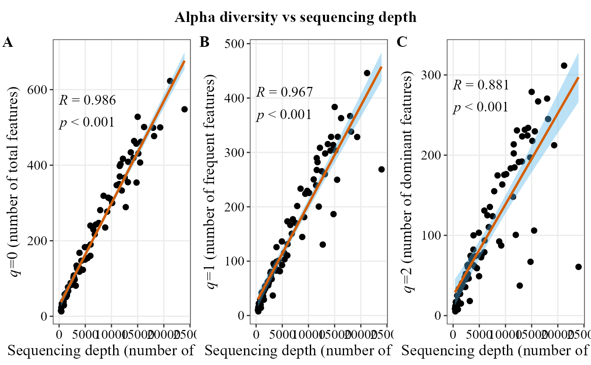
abundance_bar_plot(table = table_fung,
metadata = metadata_fungi,
x_col = "Treatment",
facet_col = "Type_of_soil",
add_remained = TRUE,
label = "Genera",
x_label_angle = 45,
save_table = FALSE)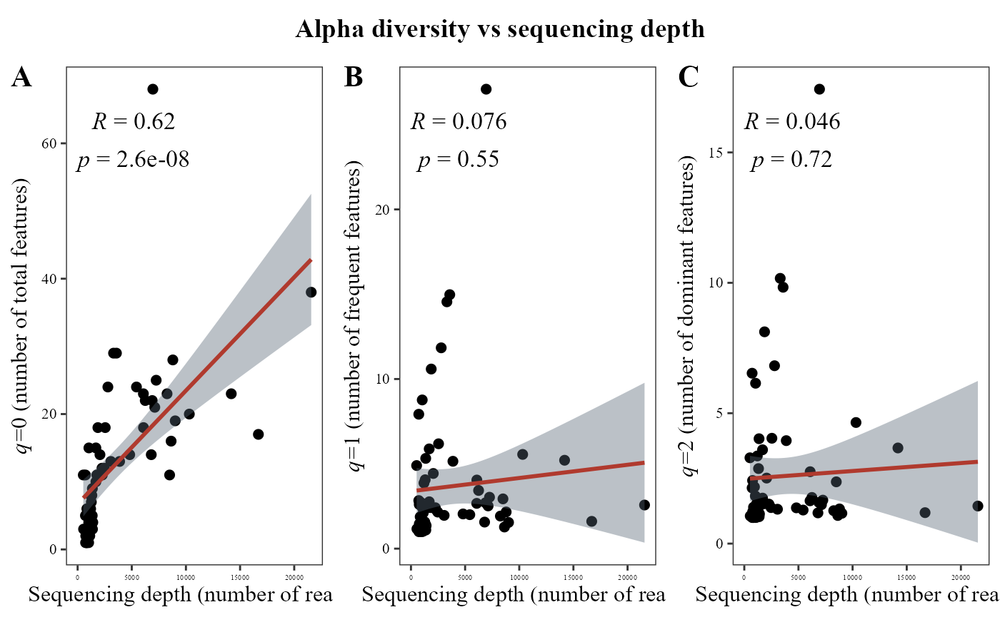
🖥️ Abundance heatmaps
Notice that the input files are the same as the previous function and this is consistent with all functions from now on.
The parameters condition1, condition2, and
condition3 define the three metadata variables to be
displayed as horizontal annotations above the heatmap.
Custom color palettes for each annotation can be specified using
colors_condition1, colors_condition2, and
colors_condition3, respectively.
Legend titles for these annotations can be customized with
name_legend_condition1,
name_legend_condition2, and
name_legend_condition3.
The top_n argument controls the number of most abundant
features included in the heatmap.
If cluster = TRUE, rows are hierarchically clustered; if
FALSE, features are ordered by decreasing relative
abundance.
The show_column_names parameter determines whether sample
names are displayed in the heatmap.
Row labels default to just the feature’s rank number
("1", "2"…); feature_prefix
prepends whatever fits the data - "ASV" here, since this
table’s features are QIIME2/DADA2 amplicon sequence variants.
abundance_heatmap_plot(table = table_bac,
metadata = metadata_bacteria,
top_n = 20,
show_column_names = FALSE,
condition1 = "Type_of_soil",
condition2 = "Treatment",
feature_prefix = "ASV")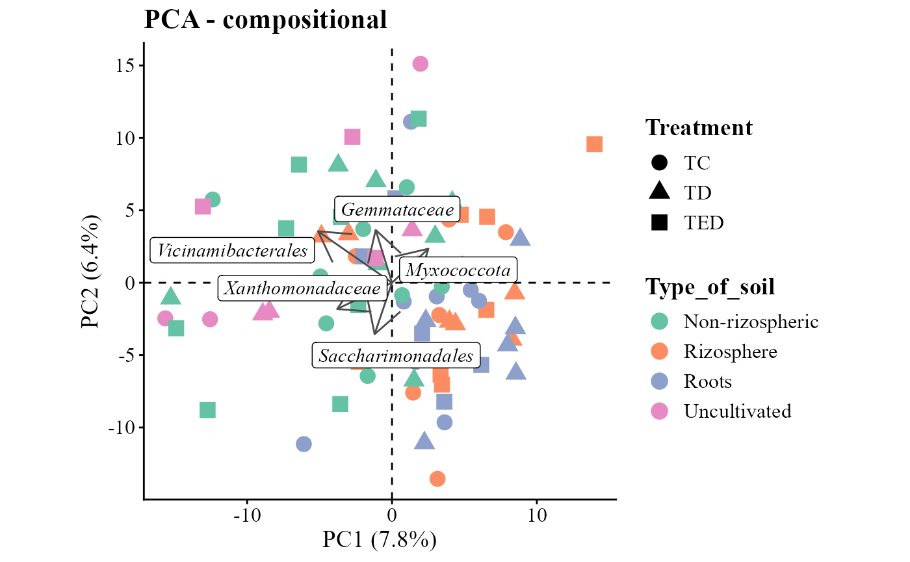
abundance_heatmap_plot(table = table_fung,
metadata = metadata_fungi,
top_n = 20,
show_column_names = FALSE,
condition1 = "Type_of_soil",
condition2 = "Treatment",
feature_prefix = "ASV")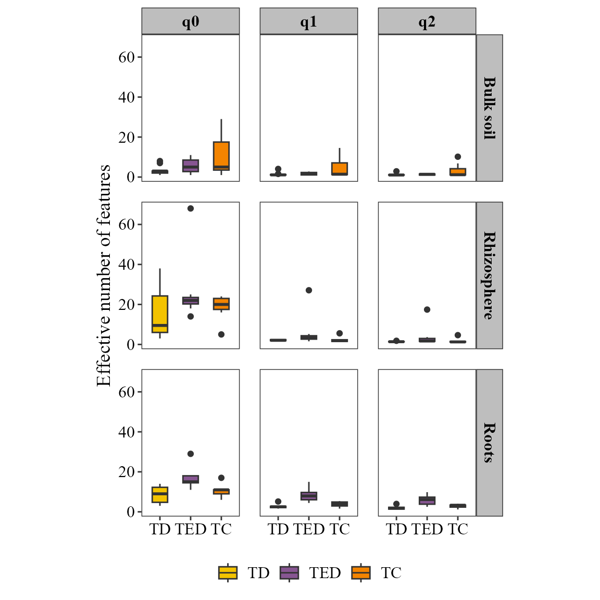
🖥️ Sankey diagram of taxonomic flow
abundance_sankey_plot() visualizes how relative
abundance flows across taxonomic ranks — from Kingdom to Species as an
interactive Sankey diagram. It is useful for getting a quick overview of
which lineages dominate the community.
The taxRanks argument specifies which ranks to include
as nodes, maxn caps the number of taxa kept per rank and
taxonomy_db tells the function how the taxonomy strings are
formatted (e.g. "silva", "gg",
"kraken2"). This function depends on networkD3,
available on CRAN:
install.packages("networkD3")⚠️ Unlike the other plotting functions in MicroBioMeta,
this one always saves an HTML file
(output_file) rather than returning a ggplot,
so it doesn’t show up as a static image like the other figures in this
vignette. It also (invisibly) returns the underlying
networkD3 widget object, which is what lets it render below
as an interactive diagram embedded directly in this page — assign the
call’s result to a variable and reference that variable to display it,
as done here:
sankey_bacteria <- abundance_sankey_plot(
table = table_bac,
output_file = "sankey_bacteria.html",
maxn = 15,
taxRanks = c("P", "C", "O", "F", "G"),
taxonomy_db = "silva"
)## Sankey diagram saved to: sankey_bacteria.html
sankey_bacteria📊 Alpha diversity
Alpha diversity describes the diversity within individual samples.
With MicroBioMeta, alpha diversity can be explored using
several different metrics, like classic metrcis as Chao and Simpson.
Also, the package implements functions based on the Hill numbers
framework, which provides a unified way to represent different
units. Hill numbers are parameterized by the order q, which
regulates the weight given to the abundance. For example, q=0
corresponds to species richness (total species), q=1 to the
exponential of Shannon entropy (frequent species), and q=2 to
the inverse Simpson index (dominant species).
📈 Correlation among Hill numbers
The alpha_hill_corr_plot() function calculates Hill
numbers for different orders (typically, 𝑞=0,1,2) and visualizes the
correlations among them using a correlation plot and evaluate how
strongly diversity metrics of different orders are related to the depth
sequencing.
This is the first step before analyze alpha diversity metrics.
For the bacteria 🦠, we can observed that at all orders of q there is a strong correlation with sequencing depth.
alpha_hill_corr_plot(table = table_bac)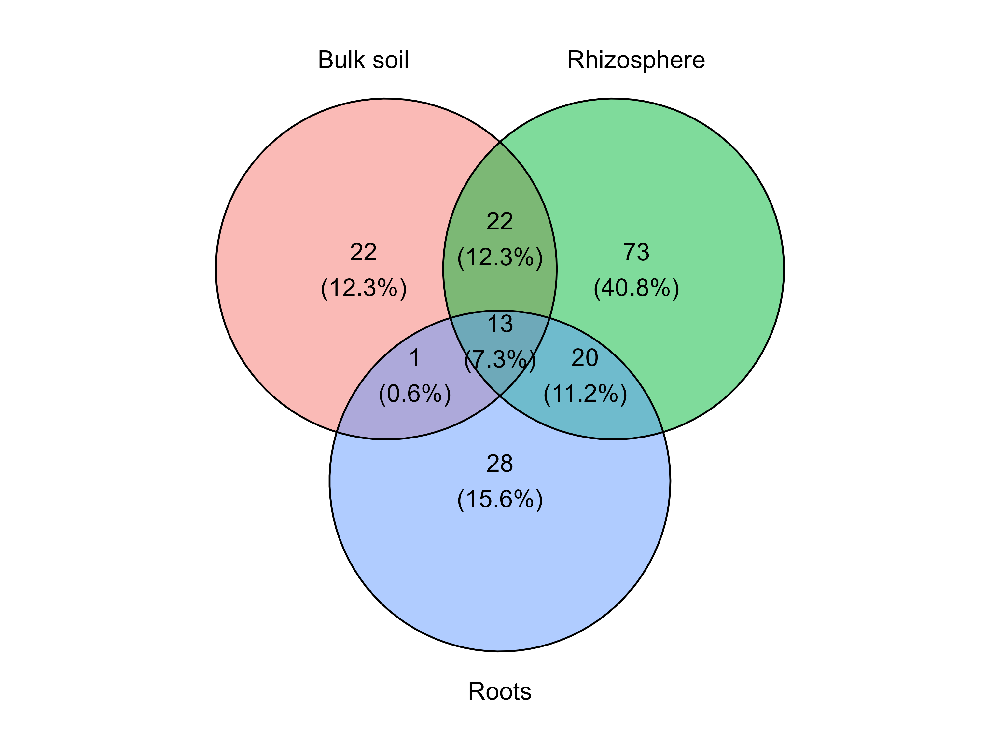
But, for fungi 🍄 data this correlation is just strong and significative at q=0, it means for richness but not to the others q orders.
alpha_hill_corr_plot(table = table_fung)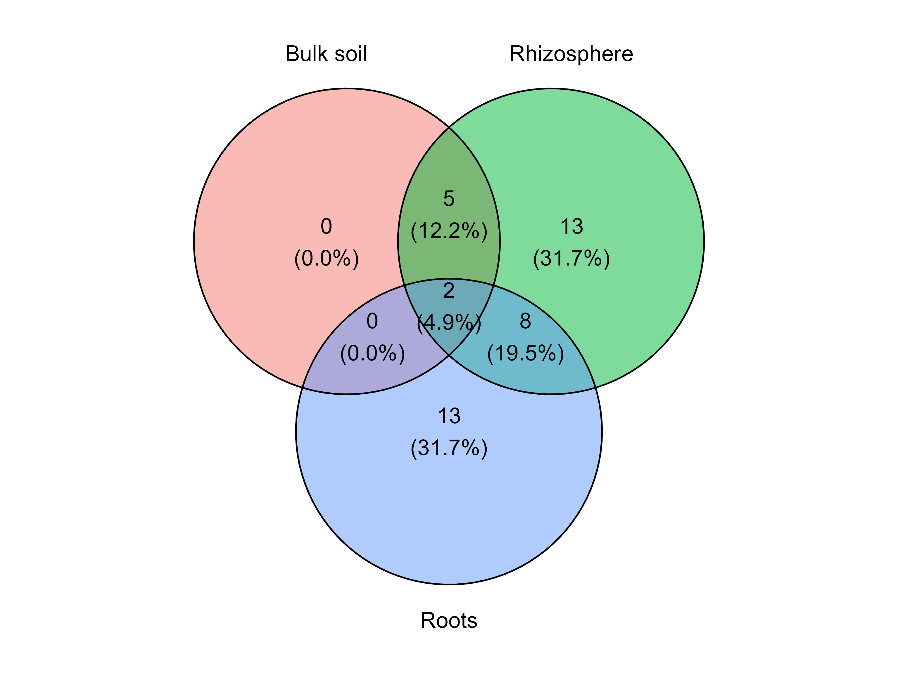
📊 Alpha diversity visualization
The alpha_hill_plot() function calculates Hill numbers
and visualizes alpha diversity patterns across experimental conditions
using boxplots.
The x_col parameter specifies the metadata column used
on the x-axis, while fill_col controls the grouping used to
color the boxplots.
The facet_by argument allows splitting the plot
according to a metadata variable, and facet_orientation
controls whether facets are arranged horizontally or vertically.
If save_table = TRUE, the function also returns a table
containing the alpha diversity values calculated for each sample.
alpha_hill_plot(table = table_bac,
metadata = metadata_bacteria,
x_col = "Treatment",
fill_col = "Treatment",
facet_by = "Type_of_soil",
facet_orientation = "horizontal",
save_table = FALSE)
alpha_hill_plot(table = table_fung,
metadata = metadata_fungi,
x_col = "Treatment",
fill_col = "Treatment",
facet_by = "Type_of_soil",
facet_orientation = "horizontal",
save_table = FALSE)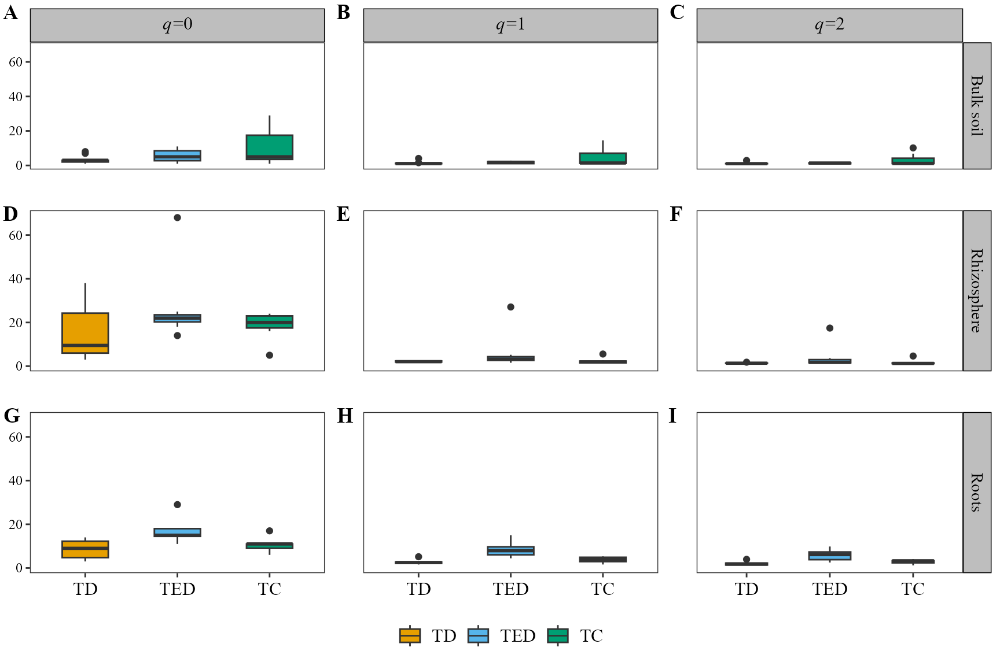
Also, we can visualize other metrics considering classic alpha diversity indexes. Also, using the parameter stat it is possible to set an statistical comparison indication the method to use:
alpha_diversity_plot(table = table_fung,
metadata = metadata_fungi,
x_col = "Treatment",
fill_col = "Treatment",
facet_by = "Type_of_soil",
facet_orientation = "horizontal",
stat = "anova",
free_y = TRUE,
save_table = FALSE)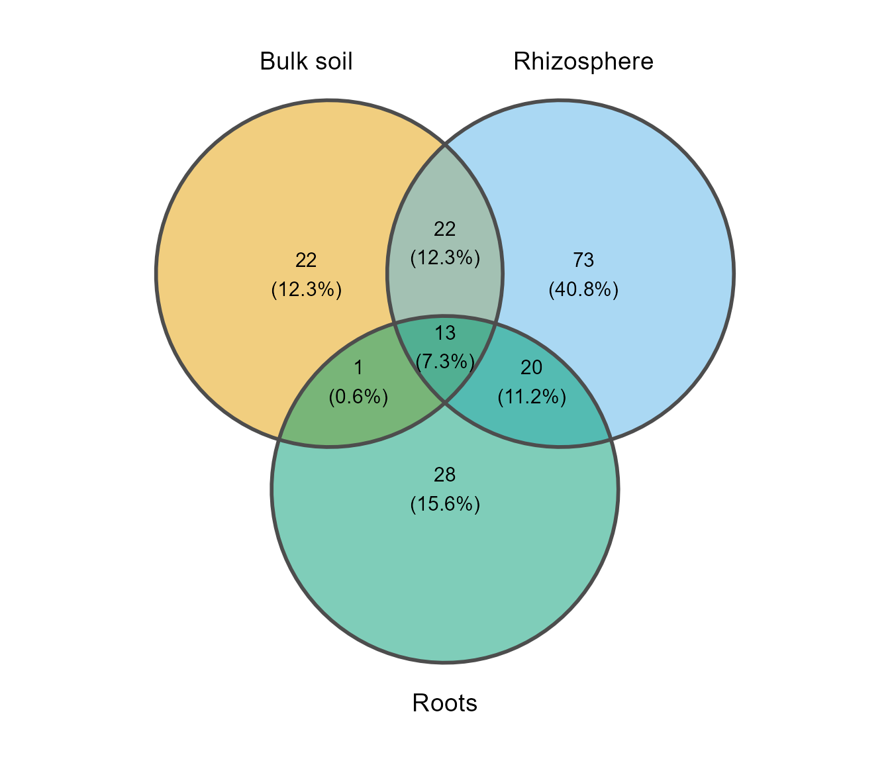
Each panel is automatically tagged (A, B, C, …) so it can be
referenced in a figure caption. When a comparison (stat) is
set, a p-value annotation is added to each panel as well.
panel_label_case switches between upper- and lowercase
tags, panel_label_bold toggles bold tags, and
panel_labels lets you supply custom tags
(e.g. c("(a)", "(b)", "(c)")) instead of the auto-generated
ones. free_y lets each panel use its own y-axis scale
instead of a shared one, as below:
alpha_diversity_plot(table = table_fung,
metadata = metadata_fungi,
x_col = "Treatment",
fill_col = "Treatment",
facet_by = "Type_of_soil",
facet_orientation = "horizontal",
stat = "anova",
free_y = TRUE,
x_label_angle = 45,
panel_label_bold = FALSE,
save_table = FALSE)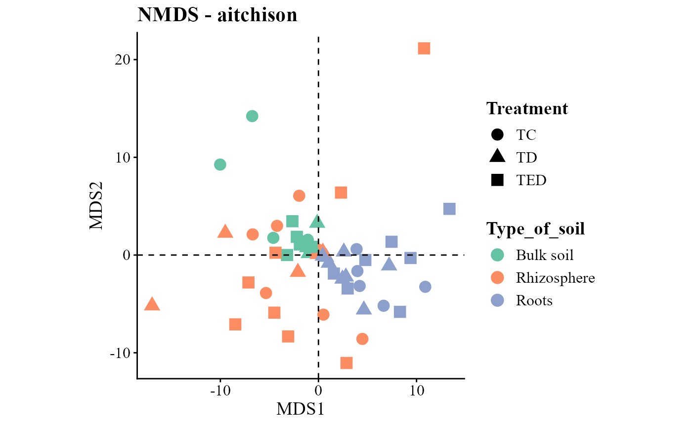
Alpha diversity along a continuous gradient
alpha_decay_plot() makes a regression Hill numbers
against a continuous metadata variable (e.g. pH,
elevation, distance). Each Hill order (q=0, 1, 2) gets its own
panel with a regression line and an annotation reporting the correlation
coefficient (Spearman’s rho by default), its p-value and when
show_lm_stats = TRUE, the linear model’s R² and slope.
The cont_var parameter names the continuous metadata
column to place on the x-axis, and the optional group_col
fits a separate regression line per group instead of a single global
one.
Here we use soil pH as the gradient, restricted to
Bulk soil and Rhizosphere for a cleaner
comparison:
metadata_bacteria_decay <- metadata_bacteria %>%
filter(Type_of_soil %in% c("Bulk soil", "Rhizosphere"))
alpha_decay_plot(table = table_bac,
metadata = metadata_bacteria_decay,
cont_var = "pH",
group_col = "Type_of_soil",
x_axis_title = "Soil pH")
💻 Shared taxa between sample groups
Another way to explore alpha diversity patterns is by examining
which taxa are shared or unique among groups of
samples. The function venn_plot() generates Venn
diagrams that summarize the overlap of taxa between groups defined in
the metadata.
We generate a Venn diagram grouping samples according to the soil compartment.
venn_plot(table = table_fung,
metadata = metadata_fungi,
merge_by = "Type_of_soil",
min_prevalence = 0 )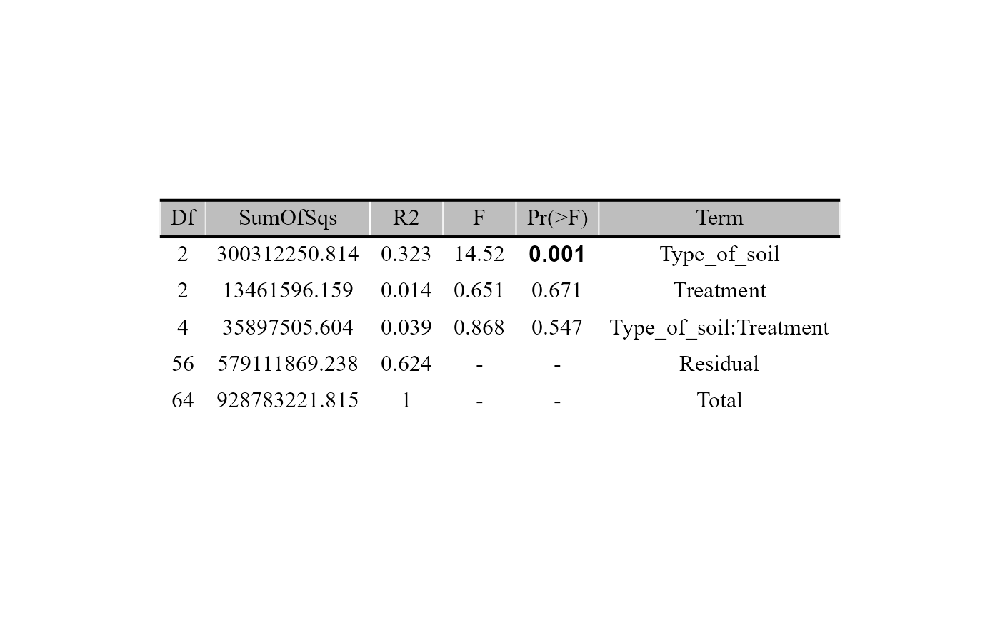
💻 Collapsing the table by taxonomic level
Microbial community tables are often generated at the ASV or OTU level, which can contain hundreds or thousands of features. For interpretation and visualization, it is often useful to group these features at a higher taxonomic level, such as genus.
The function collapse_table() performs this aggregation
by grouping features that are at the same taxonomy level and summing
their counts.
The function returns a list with two elements:
collapsed_table: a wide-format abundance table where rows correspond to taxa collapsed at the selected level and columns correspond to samples.long_format: the same information in long format, which is useful for downstream plotting or statistical analyses.For example, the following code collapses the fungal abundance table to the genus level and we make a venn diagram to visualize genera shared.
table_genus <- collapse_table(
table = table_fung,
metadata = metadata_fungi,
level = "genus"
)
venn_plot(
table = table_genus$collapsed_table,
metadata = metadata_fungi,
merge_by = "Type_of_soil"
)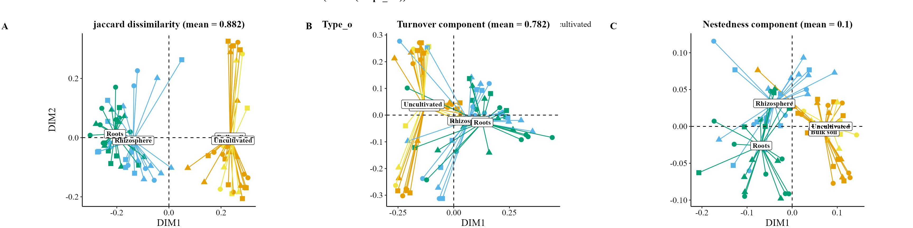
By default, collapse_table() returns the raw
counts summed at the selected taxonomic level. However,
microbial community data are needed to visualized or analyzed as
relative abundance. Setting
rel_abun = TRUE converts the counts of each sample into
percentages, where the total abundance per sample sums
to 100%.
🖥️ Filtering taxa by prevalence
Sometimes it is useful to visualize only taxa that occur frequently
within each group. This can be done using the
min_prevalence parameter.
For example, the following diagram includes only taxa present in at least 20% of the samples within each group. The parameter is default to 0, that means that nor filtering is applied.
venn_plot(table = table_fung,
metadata = metadata_fungi,
merge_by = "Type_of_soil",
min_prevalence = 0.2 )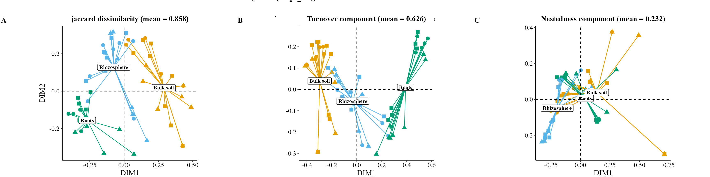
🖥️ Customizing group colors
The function also allows custom colors for the groups.
venn_plot(table = table_fung,
metadata = metadata_fungi,
merge_by = "Type_of_soil",
min_prevalence = 0,
group_colors = c("#1B9E77", "#D95F02", "#7570B3") )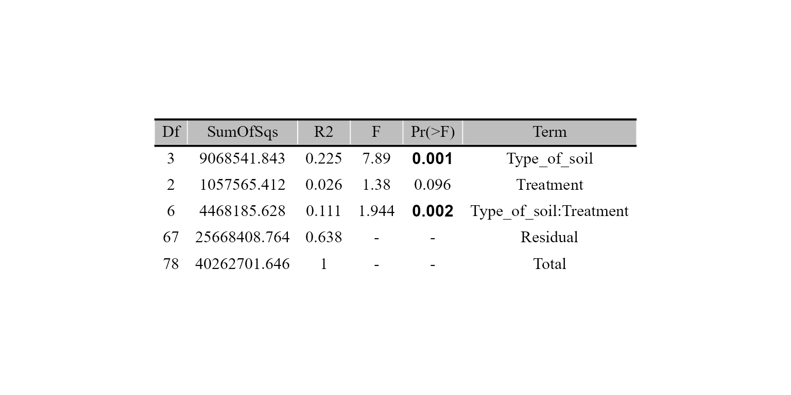
🖥️ Alternative plotting method
By default the function uses the package ggvenn, but it can also generate the diagram using ggVennDiagram.
venn_plot(table = table_fung,
metadata = metadata_fungi,
merge_by = "Type_of_soil",
method = "ggvenndiagram" )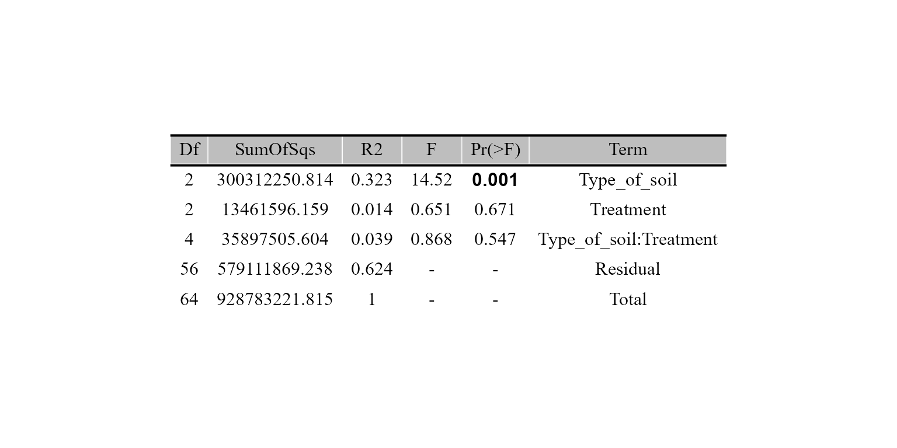
💻 Beta diversity
Beta diversity describes the differences in community composition and structure among samples. These analyses help determine whether microbial communities vary across environmental conditions, treatments, or experimental groups and how this clustered or grouped for.
MicroBioMeta has several functions to explore beta
diversity, including ordination plots, statistical tests for community
differences and partitioning approaches that separate shared and unique
components of diversity. These functions allow both visual exploration
and formal hypothesis testing.
🖥️ Ordination of community composition
The beta_ord_plot() function calculates pairwise
dissimilarities among samples and visualizes the results using an
ordination method. By default, the function uses common ecological
distance metrics (e.g., Bray–Curtis or Euclidean) and dimensionality
reduction techniques such as PCoA,
PCA, or NMDS. Accounting for
compositional data in the examples aitchinson and
compositional distances are used. Compositional uses the
clr (log centered ratio) transformation made by
ALDEx2 package.
The group_col parameter specifies the metadata column
used to color the samples, while shape_col allows an
additional metadata variable to be displayed using different point
shapes.
The distance argument defines the dissimilarity metric
used to calculate beta diversity (e.g, bray, jaccard,
aitchsion, etc), and ordination (options:
PCA, PCoA or NMDS) specifies the
ordination method applied to visualize the distances among samples.
beta_ord_plot(table = table_bac,
metadata = metadata_bacteria,
distance = "aitchison",
ordination = "NMDS",
group_col = "Type_of_soil",
shape_col = "Treatment")## Run 0 stress 0.1672108
## Run 1 stress 0.1661897
## ... New best solution
## ... Procrustes: rmse 0.088848 max resid 0.2996101
## Run 2 stress 0.1420073
## ... New best solution
## ... Procrustes: rmse 0.05346165 max resid 0.3567709
## Run 3 stress 0.1787779
## Run 4 stress 0.1865
## Run 5 stress 0.1416805
## ... New best solution
## ... Procrustes: rmse 0.02607839 max resid 0.1601523
## Run 6 stress 0.1795685
## Run 7 stress 0.1572535
## Run 8 stress 0.1403429
## ... New best solution
## ... Procrustes: rmse 0.02715348 max resid 0.1574808
## Run 9 stress 0.1923088
## Run 10 stress 0.1923064
## Run 11 stress 0.1766231
## Run 12 stress 0.1842099
## Run 13 stress 0.1780839
## Run 14 stress 0.1855193
## Run 15 stress 0.205976
## Run 16 stress 0.162163
## Run 17 stress 0.1942659
## Run 18 stress 0.1965247
## Run 19 stress 0.1662982
## Run 20 stress 0.1751886
## Run 21 stress 0.2179658
## Run 22 stress 0.1912811
## Run 23 stress 0.167804
## Run 24 stress 0.1453323
## Run 25 stress 0.1738444
## Run 26 stress 0.1455163
## Run 27 stress 0.1665068
## Run 28 stress 0.1450297
## Run 29 stress 0.1491295
## Run 30 stress 0.1447846
## Run 31 stress 0.1678302
## Run 32 stress 0.1735924
## Run 33 stress 0.1804363
## Run 34 stress 0.1411681
## Run 35 stress 0.1950783
## Run 36 stress 0.1862865
## Run 37 stress 0.1715044
## Run 38 stress 0.1812399
## Run 39 stress 0.1775803
## Run 40 stress 0.1700892
## Run 41 stress 0.1638037
## Run 42 stress 0.1569301
## Run 43 stress 0.161646
## Run 44 stress 0.2116961
## Run 45 stress 0.1443184
## Run 46 stress 0.18262
## Run 47 stress 0.1716401
## Run 48 stress 0.1722613
## Run 49 stress 0.1800481
## Run 50 stress 0.1798506
## Run 51 stress 0.1420092
## Run 52 stress 0.1886811
## Run 53 stress 0.1802256
## Run 54 stress 0.1675808
## Run 55 stress 0.1762646
## Run 56 stress 0.180797
## Run 57 stress 0.1843711
## Run 58 stress 0.1780802
## Run 59 stress 0.1648083
## Run 60 stress 0.1718939
## Run 61 stress 0.1780061
## Run 62 stress 0.1718406
## Run 63 stress 0.18523
## Run 64 stress 0.1897402
## Run 65 stress 0.1960554
## Run 66 stress 0.1627557
## Run 67 stress 0.1432602
## Run 68 stress 0.1773964
## Run 69 stress 0.1963007
## Run 70 stress 0.1447755
## Run 71 stress 0.1768338
## Run 72 stress 0.1975188
## Run 73 stress 0.1807647
## Run 74 stress 0.174119
## Run 75 stress 0.1443435
## Run 76 stress 0.1922348
## Run 77 stress 0.1866267
## Run 78 stress 0.1976575
## Run 79 stress 0.1824737
## Run 80 stress 0.2053341
## Run 81 stress 0.1460528
## Run 82 stress 0.1454491
## Run 83 stress 0.174244
## Run 84 stress 0.1444008
## Run 85 stress 0.1461697
## Run 86 stress 0.1943564
## Run 87 stress 0.1612648
## Run 88 stress 0.1455974
## Run 89 stress 0.2037001
## Run 90 stress 0.1412766
## Run 91 stress 0.1448301
## Run 92 stress 0.1670551
## Run 93 stress 0.1624232
## Run 94 stress 0.1839683
## Run 95 stress 0.1449196
## Run 96 stress 0.1422615
## Run 97 stress 0.1827273
## Run 98 stress 0.1560724
## Run 99 stress 0.1782745
## Run 100 stress 0.1852956
## *** Best solution was not repeated -- monoMDS stopping criteria:
## 18: no. of iterations >= maxit
## 82: stress ratio > sratmax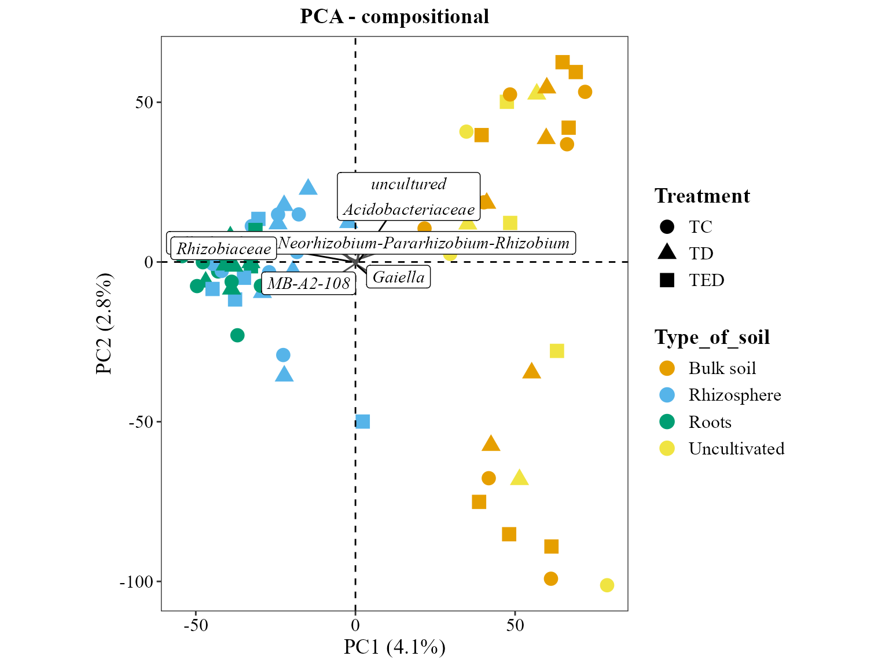
beta_ord_plot(table = table_fung,
metadata = metadata_fungi,
group_col = "Type_of_soil",
shape_col = "Treatment",
distance = "compositional",
ordination = "PCA")## no conditions provided: forcing denom = 'all'## no conditions provided: forcing conds = 'NA'## conditions vector supplied## operating in serial mode## computing center with all features## Coordinate system already present.
## ℹ Adding new coordinate system, which will replace the existing one.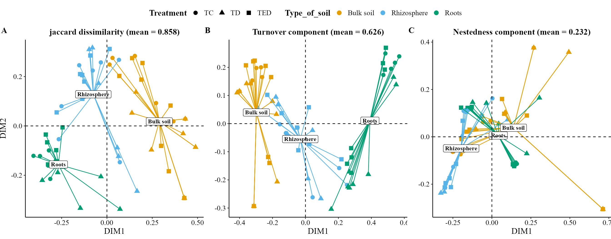
🖥️ Statistical tests for beta diversity
The beta_test_table() function performs statistical
tests to evaluate whether community composition differs among
experimental groups.
The formula_str argument specifies the experimental
design using a formula syntax similar to linear models in R or as it is
used for vegan package. The method parameter
defines the distance metric used to calculate dissimilarities, and the
test argument specifies the statistical test (options:
PERMANOVA or BETADISPER).
The permutations parameter determines the number of
permutations used to estimate statistical significance. The
strata_var is used as in vegan package to
block for a parameter.
⚠️ NOTE: Each function has the option save_* that export a table or an element obtain in each function.
method is set to match each dataset’s ordination above
(aitchison for bacteria’s NMDS, compositional
for fungi’s PCA), so the significance test evaluates the same notion of
dissimilarity shown in the plot.
beta_test_table(table = table_bac,
metadata= metadata_bacteria,
formula_str = "Type_of_soil*Treatment",
method = "aitchison",
test = "permanova",
permutations = 999)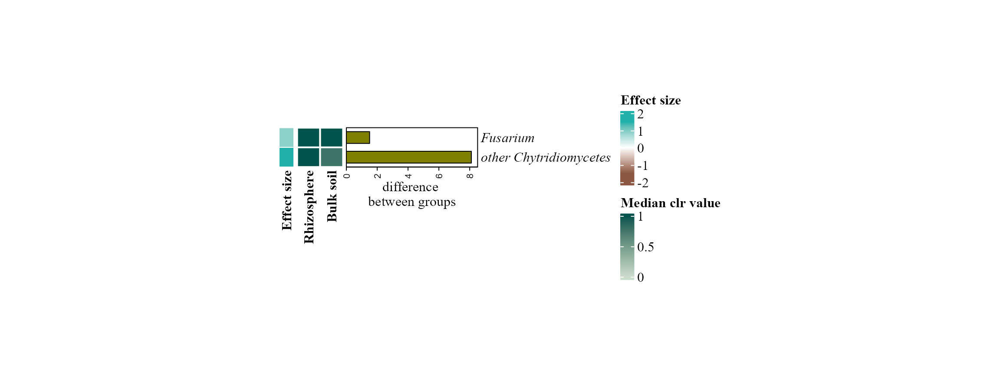
beta_test_table(table = table_fung,
metadata= metadata_fungi,
formula_str = "Type_of_soil*Treatment",
method = "compositional",
test = "permanova",
permutations = 999)## no conditions provided: forcing denom = 'all'## no conditions provided: forcing conds = 'NA'## conditions vector supplied## operating in serial mode## computing center with all features
💻 Beta diversity partitioning
Beta diversity can also be decomposed into different components. The
beta_partition_ord_plot() function partitions beta
diversity into the turnover and nestedness components based on selected
dissimilarity indices.
The index argument specifies the dissimilarity family
used for the partition (e.g., Jaccard or Sørensen). The
group_col and shape_col parameters define how
samples are visualized according to metadata variables.
beta_partition_ord_plot(
table = table_bac,
metadata = metadata_bacteria,
index = "jaccard",
group_col = "Type_of_soil",
shape_col = "Treatment",
save_table = FALSE)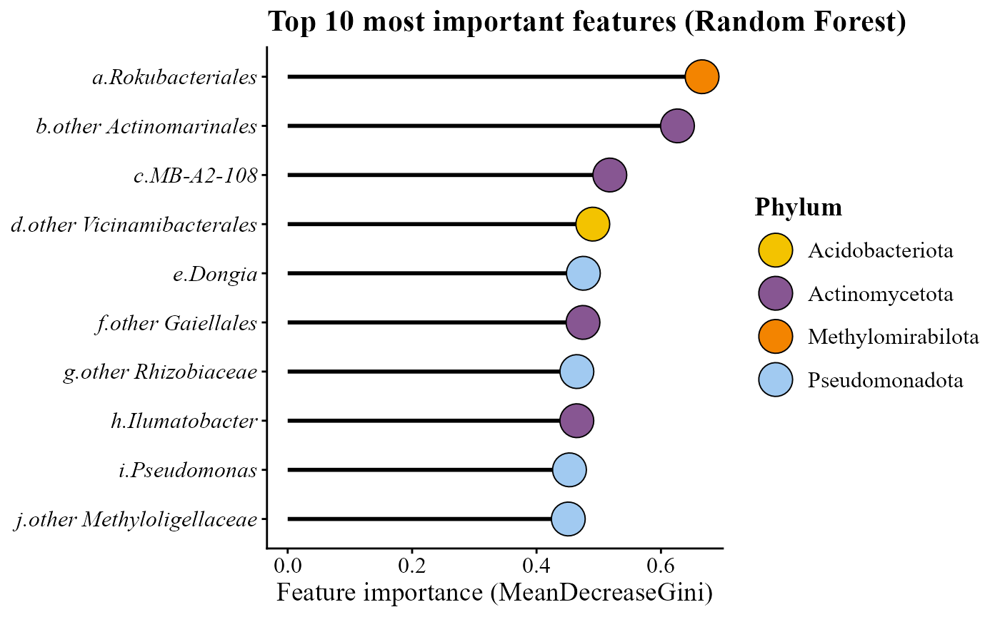
beta_partition_ord_plot(
table = table_fung,
metadata = metadata_fungi,
index = "jaccard",
group_col = "Type_of_soil",
shape_col = "Treatment",
save_table = FALSE)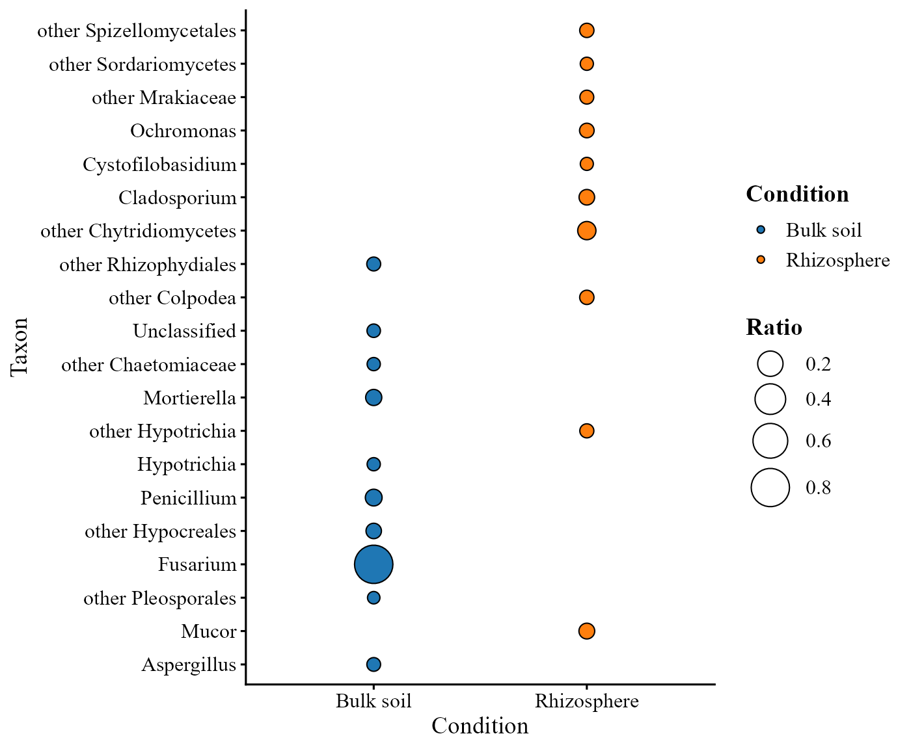
🖥️ Pairwise beta diversity visualization
The beta_dissimilarity_plot() function summarizes
pairwise beta diversity values using boxplots, allowing comparison of
diversity patterns among groups of samples.
The condition1_col and condition2_col
parameters specify metadata variables used to define the groups being
compared. The partition argument determines which component
of beta diversity is displayed (e.g., shared or unique), while
family defines the dissimilarity index used.
By default beta_dissimilarity_plot() keeps every
pairwise combination possible of condition1_col, including
a group compared against itself (e.g. "Roots_vs_Roots").
The comparison_condition1 argument restricts the plot to
specific "value1_vs_value2" labels (the two values sorted
alphabetically and joined with "*_vs_*"). Here we build
that list programmatically to keep only the comparisons of every other
compartment against Roots, dropping
self-comparisons:
groups_bac <- setdiff(unique(as.character(metadata_bacteria$Type_of_soil)), "Roots")
vs_roots_bac <- paste0(pmin(groups_bac, "Roots"), "_vs_", pmax(groups_bac, "Roots"))
vs_roots_bac## [1] "Rhizosphere_vs_Roots" "Bulk soil_vs_Roots" "Roots_vs_Uncultivated"As with the alpha diversity plots, x_label_angle rotates
the x-axis tick labels (default 0),
strip_text_bold toggles bold facet strip titles (default
FALSE), and aspect_ratio fixes the panel’s
height/width ratio. As with the alpha plots, stat
(e.g. "wilcox.test", "kruskal.test",
"anova") adds a statistical comparison across the boxplots,
passed through to ggpubr::stat_compare_means().
If save_table = TRUE, the function also returns a table
containing the beta diversity values used to generate the plot.
beta_dissimilarity_plot(table = table_bac,
metadata = metadata_bacteria,
comparison_condition1 = vs_roots_bac,
condition1_col = "Type_of_soil",
condition2_col = "Treatment",
x_axis_title = "Samples",
x_label_angle = 45,
stat = "kruskal.test",
partition = "shared", family = "jaccard",
save_table = FALSE)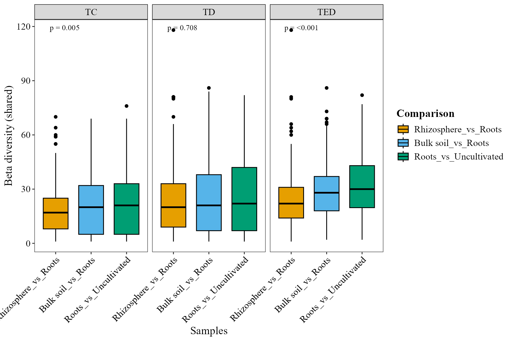
groups_fung <- setdiff(unique(as.character(metadata_fungi$Type_of_soil)), "Roots")
vs_roots_fung <- paste0(pmin(groups_fung, "Roots"), "_vs_", pmax(groups_fung, "Roots"))
beta_dissimilarity_plot(table = table_fung,
metadata = metadata_fungi,
comparison_condition1 = vs_roots_fung,
condition1_col = "Type_of_soil",
condition2_col = "Treatment",
x_axis_title = "Samples",
x_label_angle = 45,
stat = "kruskal.test",
partition = "shared",
family = "jaccard",
save_table = FALSE)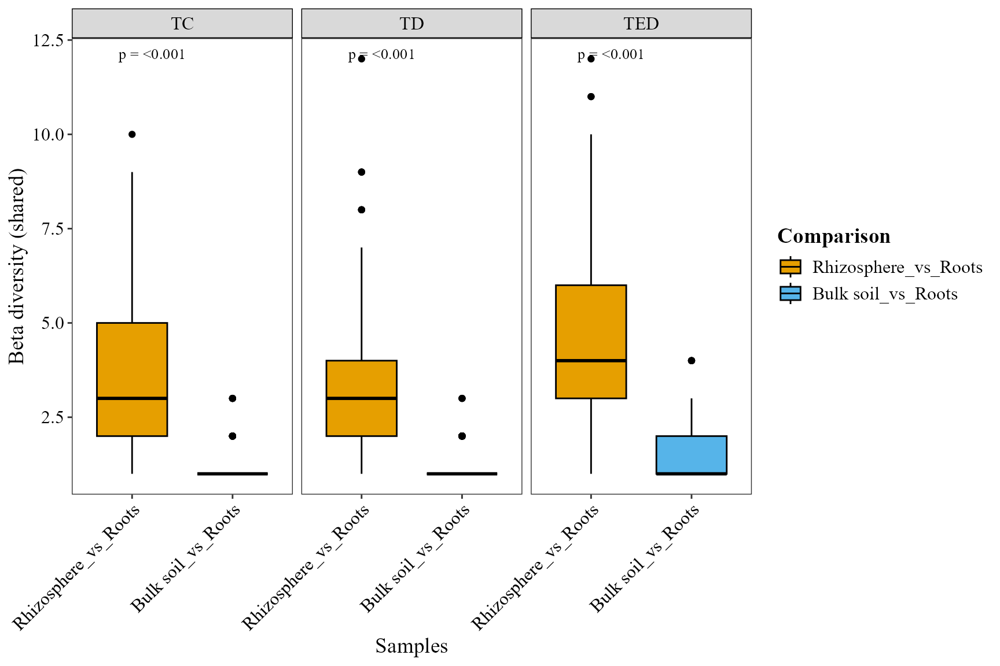
🖥️ Pairwise turnover: between-group vs. within-group
beta_turnover_plot() reports the ASV turnover component
of Hill-number-based beta diversity (q=0, 1, 2), one facet row
per Hill order.
beta_turnover_plot() answers a different question than
beta_dissimilarity_plot(): for one reference
group (e.g. Rhizosphere), is its turnover against
another group (e.g. Roots — a between-group comparison) greater
than its turnover against itself
(Rhizosphere-vs-Rhizosphere pairs — a within-group baseline)? If
between-group turnover is significantly higher, that’s evidence the two
compartments really do host distinct communities, beyond the variability
already present among replicates of the same compartment.
So the plot below has one purple strip on top — labeled “Rhizosphere”, the fixed reference group in both comparisons — and, inside it, two boxes: “Roots” (Rhizosphere vs. Roots, between-group) and “Rhizosphere” (Rhizosphere vs. Rhizosphere, within-group). The strip and the “Rhizosphere” box both being labeled the same is intentional, not a duplicate — the strip names the reference, the box names what it’s being compared against (itself, in that one case).
comparison_condition1 selects which
"value1_vs_value2" combinations to keep — always with the
reference group (Rhizosphere) first.
comparison_condition2 keeps only the same treatment pairs,
so turnover isn’t confounded by comparing samples from different
treatments.
color_facets_x colors the top facet strip
(condition1.x) and color_axis_x colors the two
boxes (condition1.y). Tick labels are hidden by default
since the groups are already identified in the legend. Set
show_x_labels = TRUE to bring them back. stat
adds a statistical comparison between the two boxes.
beta_turnover_plot(
table = table_fungi,
metadata = metadata_fungi,
comparison_condition1 = c("Rhizosphere_vs_Roots", "Rhizosphere_vs_Rhizosphere"),
comparison_condition2 = c("TC_vs_TC", "TD_vs_TD", "TED_vs_TED"),
condition1.x = "Type_of_soil.x",
condition1.y = "Type_of_soil.y",
condition2.x = "Treatment.x",
condition2.y = "Treatment.y",
color_facets_x = "#5D478B",
color_axis_x = c("Roots" = "#56B4E9", "Rhizosphere" = "#E69F00"),
stat = "wilcox.test"
)$plot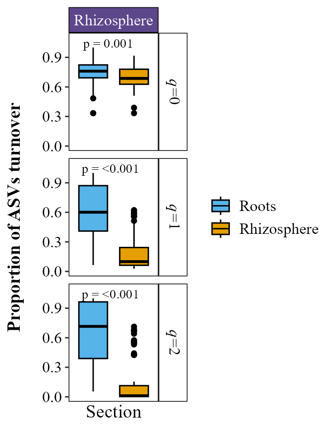
💻 Distance-decay of community similarity
The function beta_decay_plot() tests whether communities
that are geographically closer are also more similar in composition. It
computes pairwise community dissimilarity (distance,
e.g. "jaccard", "bray", "horn")
and pairwise geographic distances from sample coordinates, runs a Mantel
test between them, and plots similarity (1 − dissimilarity) against
distance with a fitted regression line.
lat_col/lon_col name the latitude/longitude
columns in metadata (decimal degrees), and the optional
group_col runs a separate Mantel test and regression line
per group instead of one global test.
We construct example data for this part:
loc_coords <- data.frame(
Loc = 0:8,
lat = 19.0 + seq(0, 0.8, length.out = 9),
lon = -99.0 + seq(0, 0.8, length.out = 9)
)
metadata_bacteria$lat <- loc_coords$lat[match(metadata_bacteria$Loc, loc_coords$Loc)]
metadata_bacteria$lon <- loc_coords$lon[match(metadata_bacteria$Loc, loc_coords$Loc)]
#filtering uncultivated
metadata_bacteria_decay <- metadata_bacteria %>%
filter(Type_of_soil != "Uncultivated")
beta_decay_plot(
table = table_bac,
metadata = metadata_bacteria_decay,
lat_col = "lat",
lon_col = "lon",
distance = "jaccard",
group_col = "Type_of_soil"
)
📊 Differential abundant analysis
MicroBioMeta has several functions to explore
differentially abundant taxa. These analyses help
identify microbial features that vary significantly across experimental
groups.
Two functions rely on a compositional data analysis framework implemented in the package ALDEx2. This approach accounts for the compositional nature of sequencing data by using Monte Carlo Dirichlet instances and centered log-ratio transformations and in the package ANCOMBC2 an alternative differential abundance method that explicitly models compositional bias and structural zeros.
The functions:
aldex_volcano_plot()visualizes differential abundance results using a volcano plot.aldex_heatmap_plot()visualizes significant taxa in a heatmap.ancombc_plot()returns a bar plot (when 2 groups) and a heatmap (when 3+ groups).
Additionally, two complementary approaches help identify important taxa that discriminate between groups:
ratios_bubble_plot()visualizes taxa based on log-ratio differences between conditions.random_forest_lollipop_plot()uses a Random Forest model to identify features that best predict a given variable or condition, visualized as a lollipop plot of feature importance.
📊 Example: Bacterial data
First, we filter the metadata to retain only two soil compartments to apply ALDEx2.
metadata_bacteria_compar <- metadata_bacteria %>%
filter(Type_of_soil == "Roots" | Type_of_soil =="Rhizosphere")
table_bacteria_compar <- table_bacteria[match(metadata_bacteria_compar$SAMPLEID, colnames(table_bacteria))]
table_bac_compar <- merge_feature_taxonomy(table_bacteria_compar, taxonomy_bacteria)## Warning in merge_feature_taxonomy(table_bacteria_compar, taxonomy_bacteria): 83
## taxonomy IDs are not present in the table and will be excluded from the result.We can visualize differential abundance using a volcano
plot. Significant taxa are labeled with their name;
label_size controls the font size of these labels, and
filter_uncultured = TRUE drops “uncultured”/“unculture”
taxa from the labels (they are still plotted as points, just not
labeled).
aldex_volcano_plot(table = table_bac_compar,
metadata = metadata_bacteria_compar,
col_cond = "Type_of_soil",
type = "volcano",
label_size = 3,
filter_uncultured = TRUE )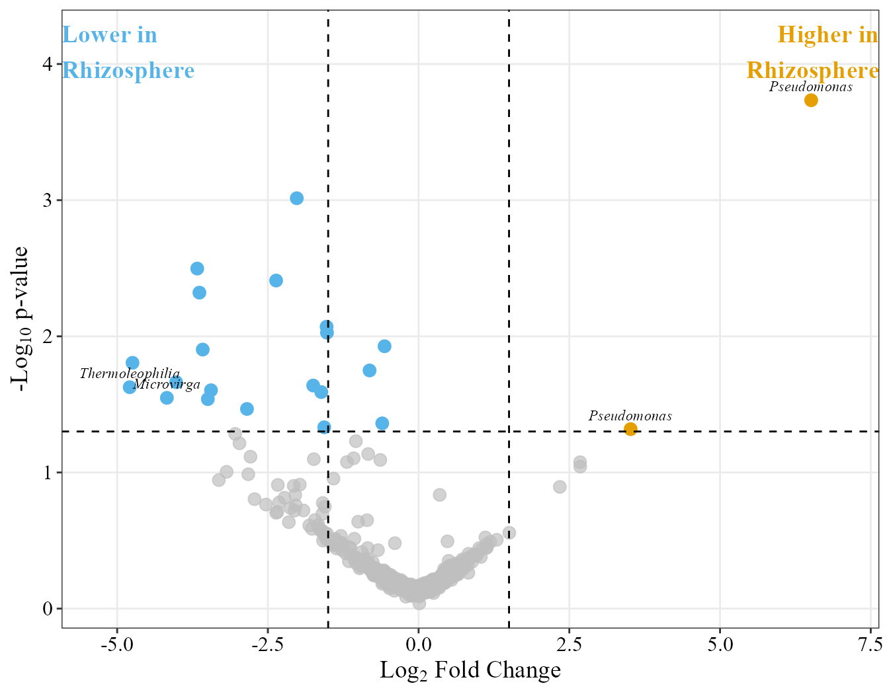
📊 ANCOMBC2 as an alternative method
ancombc_plot() provides an alternative to the
ALDEx2-based functions above. This functions depends on the Bioconductor
packages ANCOMBC and phyloseq:
tax_level groups the table to a taxonomic rank before
testing (default "Genus"), and
p_adj_method/prv_cut control the
multiple-testing correction and prevalence filter.
⚠️ With a low prv_cut, rare/sparse taxa can trigger a
"Zero variances have been detected..." error from
ANCOMBC2’s internal bias-correction step on some runs (it doesn’t always
happen - it depends on which taxa the bootstrap iteration happens to
keep). Raising prv_cut filters those sparse taxa out before
testing and avoids it.
ancombc_plot(
table = table_bac_compar,
metadata = metadata_bacteria_compar,
col_cond = "Type_of_soil",
tax_level = "Genus",
prv_cut = 0.3,
p_adj_method = "BH"
)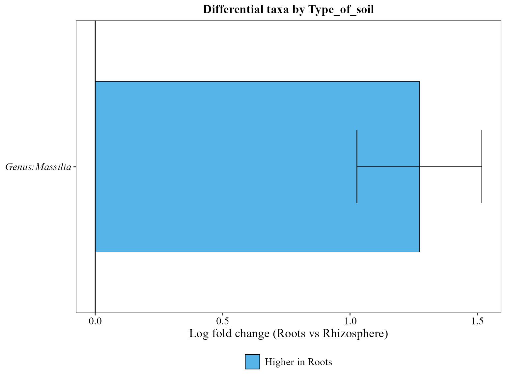
📊 Example: Fungal data
We follow the same procedure but visualize the results with a
heatmap. This funtcions uses
ComplexHeatmap.
metadata_fungi_compar <- metadata_fungi %>%
filter(Type_of_soil == "Bulk soil" | Type_of_soil =="Rhizosphere")
table_fungi_compar <- table_fung[match(metadata_fungi_compar$SAMPLEID, colnames(table_fung))]
table_fung_compar <- merge_feature_taxonomy(table_fungi_compar, taxonomy_fungi)## Warning in merge_feature_taxonomy(table_fungi_compar, taxonomy_fungi): 17
## taxonomy IDs are not present in the table and will be excluded from the result.
aldex_heatmap_plot(table = table_fung_compar,
metadata = metadata_fungi_compar,
col_cond = "Type_of_soil")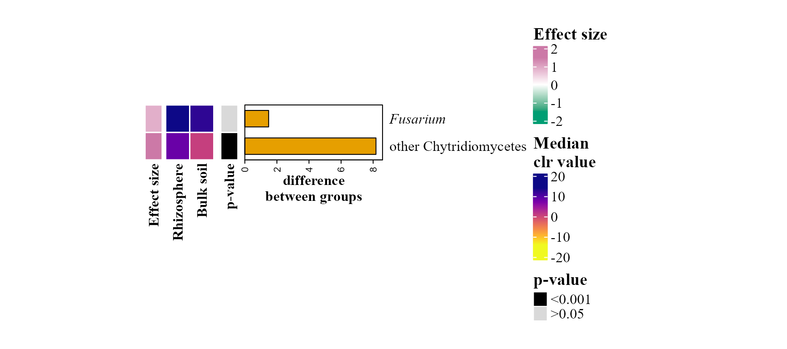
📊 Identifying important taxa
The functions random_forest_lollipop_plot() and
ratios_bubble_plot() can also be used to highlight taxa
that contribute most strongly to the observed differences between
conditions.
For example, a Random Forest model can be used to identify the taxa that best predict the soil compartment:
random_forest_lollipop_plot(
table = table_bac,
metadata = metadata_bacteria,
top_n = 10,
variable_to_predict = "Type_of_soil")## Warning in random_forest_lollipop_plot(table = table_bac, metadata = metadata_bacteria, : Note: Some bacterial phylum names have been updated to match NCBI's revised taxonomy:
## - 'Proteobacteria' changed to 'Pseudomonadota'
## - 'Actinobacteriota' changed to 'Actinomycetota'
## Reference: https://ncbiinsights.ncbi.nlm.nih.gov/2021/12/10/ncbi-taxonomy-prokaryote-phyla-added/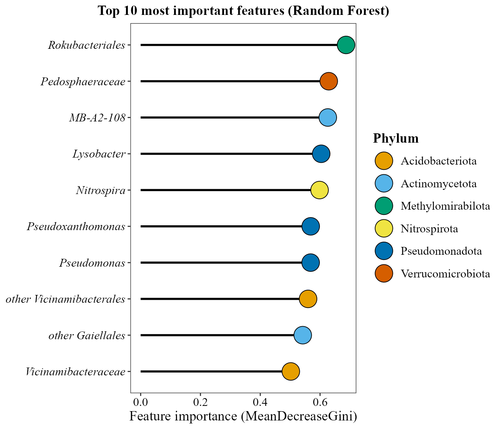
Alternatively, taxa with the strongest log-ratio differences between two conditions can be visualized using:
ratios_bubble_plot(table = table_fung_compar,
metadata = metadata_fungi_compar,
condition_col = "Type_of_soil",
top_n = 20,
condition_A = "Rhizosphere",
condition_B = "Bulk soil")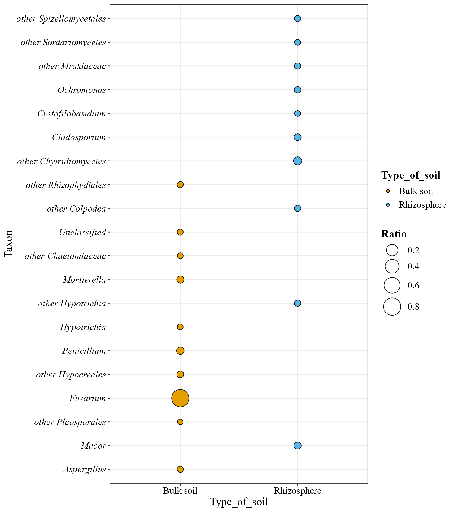
💻 Environmental analyses
MicroBioMeta provides two functions to explore the
relationship between environmental variables and
microbial community composition:
corr_env_abund_plot()— computes correlations between taxonomic abundance and environmental variables.cca_rda_biplot()— performs constrained ordination using Canonical Correspondence Analysis (CCA) or Redundancy Analysis (RDA).
🖥️ Preparing the environmental table
Environmental variables must be organized in a data frame where rows correspond to samples and columns correspond to environmental variables.
env_table_fung <- metadata_fungi %>%
dplyr::select(SAMPLEID, pH:Arbus_per) %>%
remove_rownames() %>%
column_to_rownames(var = "SAMPLEID")🖥️ Correlation between environmental variables and taxonomic abundance
The function corr_env_abund_plot() calculates
correlations between environmental variables and
taxonomic relative abundances at a selected taxonomic
level and returns a correlation heatmap showing how
environmental variables relate to taxonomic abundances.
Example using phylum-level abundances:
corr_env_abund_plot(table = table_fung,
env_table = env_table_fung,
metadata = metadata_fungi,
level = "phylum",
save_table = FALSE)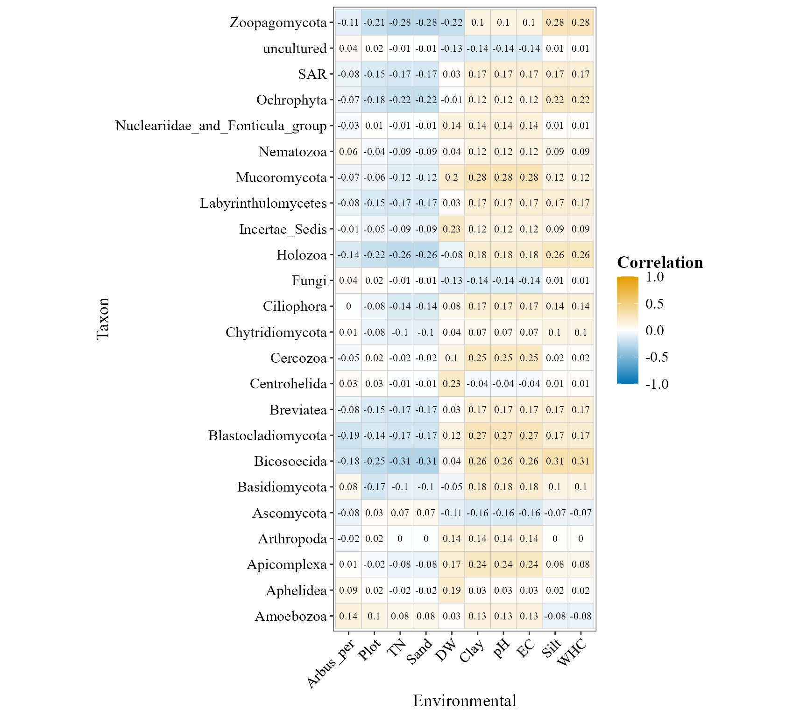
🖥️ Alternative visualization
Correlations can also be displayed using circle markers instead of tiles:
corr_env_abund_plot(table = table_fung,
env_table = env_table_fung,
metadata = metadata_fungi,
level = "phylum",
save_table = FALSE,
geom = "circle")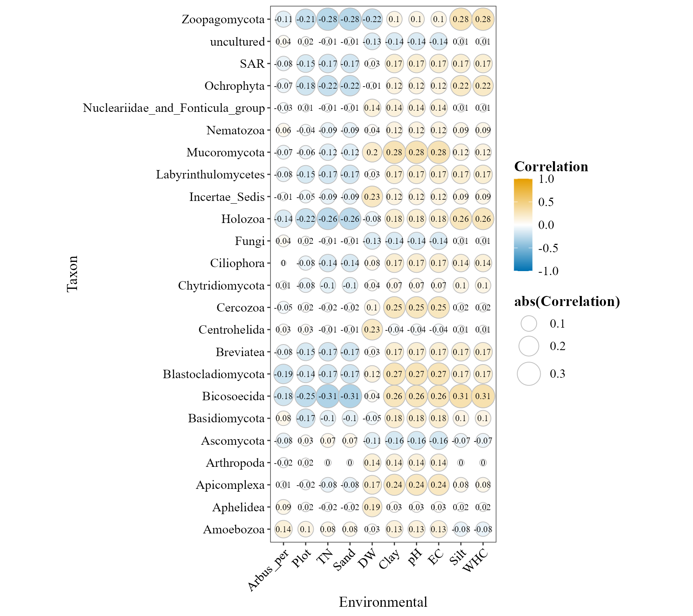
🖥️ Constrained ordination (CCA / RDA)
The function cca_rda_biplot() performs a constrained
ordination analysis to evaluate how environmental variables explain
variation in microbial community composition.
Before running the analysis, ensure that the sample order in the environmental table matches the metadata:
env_table_fung <- env_table_fung[
match(metadata_fungi$SAMPLEID, rownames(env_table_fung)), , drop = FALSE]scale_arrows is a parameter that helps you to visualize
better the environmental vectors:
cca_rda_biplot(table = table_fung,
env_data = env_table_fung,
metadata = metadata_fungi,
env_vars = c("pH","TN","WHC", "EC", "Clay"),
analysis = "RDA",
show_all_env_vectors = TRUE,
group_col = "Type_of_soil",
scale_arrows = 3)##
## Some constraints or conditions were aliased because they were redundant. This
## can happen if terms are constant or linearly dependent (collinear): 'WHC',
## 'EC', 'Clay'
This analysis produces a biplot where:
Points represent samples
Colors indicate sample groups defined in the metadata.
Arrows represent environmental variables and their direction of influence on community structure.
Environmental vectors pointing in similar directions indicate positive associations, while vectors pointing in opposite directions suggest negative relationships